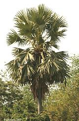
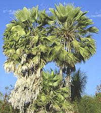

SAFARI
Users
- General & History
- Varieties
- Palm & Coconut Products - Just the edible ones.
- Palm Oil & Coconut Oil - high controversy!
General & History
Looking at a palm tree it's hard to imagine that it descends from a magnolia, or that it is in any way related to a lily, but both things are true. It is this very ability for rapid and extreme evolutionary change that enabled the magnolias to dominate the world, as they do today.
Palms are tropical and subtropical trees of great economic and culinary importance wherever they grow. In California, the Middle East and Southwest Asia the drought tolerant Date Palm is important for its sweet fruit. In the moister tropics the Coconut Palm and Toddy Palm provide the oil, sugar, fruit, timber, medicinals and roofing thatch the people depend on for sustenance and shelter. There is no part of a palm tree that isn't useful - and used.
Palms come in three basic appearances:
- Feather palms have long leaf stems with long pointed leaflets projecting from each side (pinnate).
- Fan palms have leaves shaped like a hand held fan with ribs radiating from the stem and webbing between them (palmate).
- Fish Tail palms are like feather palms except that the leaflets are wider at the end like a fish tail rather than tapering to a point.
Varieties
Açai Palm
[Euterpe edulis, Euterpe oleracea]
These two species of palm have been harvested in the wild for Hearts of Palm with considerable damage to the species and the local ecology. They are now grown on plantations in Brazil's Amazon Basin but little elsewhere because their demand for water is too great. Other regions use the Peach Palm instead.
E. edulis is a single stem palm so harvesting the heart kills
the whole tree. Plantations must be completely replanted after harvest.
E. oleracea is a clumping palm so it can be harvested without
killing it. It will sprout new stems and provide additional crops.
Açai fruit has long been an important food for inhabitants of the Amazon Basin, though the purple or green fruit is small and the flesh thin. Açai juice is often used as beverage and ice cream flavorings, and for similar purposes. The juice is highly perishable so is generally marketed in frozen or dried form.
Recently, beverages containing açai juice have been marketed
through health food emporiums claiming high antioxidant content,
anti-cancer activity, and miraculous curing of many diseases. The
antioxidant content of these beverages is generally lower than in red
wine or grape juice. The anti-cancer claims are still under study,
and legitimate nutrition researchers seriously doubt them, as well as
all the other "miracle fruit" claims made by the health food industry.
Photo by Decio Horita Yokata licensed under
Creative Commons
Attribution-Share Alike 2.5 Generic
Areca Palm
[Areca Nut Palm, Betel Nut Palm, Areca catechu]
The fruit kernel of this smooth stemmed feather palm is the source of the nut used in betel nut chews. The photo specimens were purchased from an Asian market in Los Angeles and are just beginning to ripen. The seed kernel is still soft and hasn't yet developed red pigments.
In general, some slices of areca nut are mixed with lime (calcium hydroxide) and rolled up in a leaf of the betel vine (Piper betle). Various spices and tobacco are often included. This concoction (Paan in India) is then chewed for a mildly narcotic (and slightly addictive) effect. Use is common in Pakistan, India, Sri Lanka, Southeast Asia, on into the Pacific Islands, and north to Taiwan.
Chewing betel nut stains the mouth red and relates to an elevated
incidence of mouth cancer. Its use is most prevalent in India, has
been declining in Southeast Asia, but increasing somewhat in the Pacific
Islands. It remains very popular in Taiwan where it is peddled by
scantily clad "Betel Beauties" from neon lit one room glass paneled shops.
Awara Palm
[Awara, Wara (French Guiana,Guyana); Warra (Suriname); Tucum, Tucumã-do-Pará (Brazil); Chontilla (Ecuador); Astrocaryum vulgare]
This palm is native to the Amazon Rainforest, from Pará State
in northern Brazil extending north into Guiana, Suriname and French
Guiana. It grows to 49 feet tall and regenerates from multiple stems.
The red-orange fruit is used similarly to the Oil Palm, including the
use of fruit pulp in French Guiana as the basis for soup made with
smoked chicken and smoked fish, similarly to the Banga oil palm soup
of Nigeria. Both Red Palm oil from the pulp, and clear Palm Kernel Oil
are made. The hard black seed shell was cut to make wedding rings by
indigenous people and slaves. The oils are currently used to some
extent for biodiesel
Coconut Palm
 [Cocos nucifera]
[Cocos nucifera]
This palm is native to the tropical coasts of Southeast Asia but has
been carried by ocean currents and trade to tropical lands throughout
the world. It is so important, not just to cuisines worldwide, but to
the basic survival of many tropical peoples and the economies of their
lands that I have given it it's own page.
Coconut Palm & Coconut
Products.
Photo © b0005.
Date Palm
[Phoenix dactylifera]
Date palms have been of very high economic and culinary value since
prehistoric times. Cultivation has been so long established the point of
origin is not known but may have been North Africa or Southwest Asia.
Today date palms are grown in hot dry regions for the length of North
Africa and on through Iran and Pakistan, and in California which produces
nearly all of the dates grown in the US. Because of its importance this
tree has its own
Date Palm Page.
Photo © i0077.
Doum Palm
[Thebaica, Hyphaene thebaica]
Native to the Nile valley, this is the sacred palm of Ancient Egypt; its
fruits buried with the pharaohs by the basket load. Today it is popular
in Eritrea where the fruits are called Akat. The unripe kernels are
edible and the dried brown rind is made into a palm molasses, cakes and
sweets. Sprouted shoots are also eaten as a vegetable and an herb tea is
also made, said good for diabetes.
Photo by Marco Schmidt distributed under license Creative
Commons
Attribution Share-Alike 3.0 Unported.
Cell Palm
[Microwave Palm]
This North American feather palm, native to Los Angeles,
California, grows to maturity very quickly and then seems to just stops
growing. It is easy to identify from it's smooth brown trunk and unique
inflorescence. The photo specimen, about 60 feet tall, is in full bloom.
These palms seem never to produce mature fruit so their means of
propagation is somewhat of a mystery.
Coyo Palms
[Coyoles (fruit); Macaw palm; Acrocomia aculeata alt Acrocomia mexicana also Acronomia mexicana]
So widespread through the tropics of South and Central America, the Caribbean Islands, and north into southern Mexico, it is thought this feather palm had some human help. It was a very important food for the Maya, especially through the later Classical period. Stones have been found with sockets to hold the fruit in place as it was cracked open with a rock. Today it is purveyed by street vendors after simmering in a mix of Panela (unrefined sugar), cinnamon and cloves (Coyoles en Miel). Often just the outer fibrous coating is sucked for the sweet syrup, as humans cannot crack the shell - only macaws can break them with their powerful beaks. I use a sharp Chinese cleaver knife driven by a soft faced mallet, but you need a board with a big hole in it to hold them in place. They are said to be completely edible when very young, but you need access to the trees for that.
These fruits have a very thin skin, with a fibrous outer layer
(perfect for holding sweet syrup). Under that is an extremely hard shell
holding a core of material very much like coconut in both texture and
taste. The spherical fruits are about 1-1/4 inch diameter. The photo
specimens were purchased from the Central American section of a large
Hispanic market in Los Angeles for 2016 US $4.49 for a 32 ounce jar.
Ingred: Palm Caldsage (Acronomia mexicana) Coyoles, Water, Molasses,
Sugar, Citric Acid, Sodium Benzoate 0.01% - product of Guatemala.
Nipa Palm
[Mangrove Palm, Nipa (Philippines), Nipah (Indonesia, Malaysia), Dura Nuroc (Viet), Gol Pata (Bangladesh), Dani (Burma), Attap Palm (Singapore), Nypa fruticans]
This Southeast Asian feather palm grows in tidal mangrove swamps where it may constitute most of the vegetation. The trunk lies horizontal buried in mud and only fronds and flower stalks grow upward out of the mud and water (as in the photo). Sap from the inflorescence (flower clusters) can be tapped just as in other palms and is made into an alcoholic beverage called Tuba.
In the Philippines Tuba is given a secondary fermentation to turn it
into vinegar called Sukang Paombong. Details and Cooking.
Photo by Marshman distributed under
GNU Free Documentation License v2.1 or later.
Oil Palm
[Elaeis oleifera (Central and South America), Elaeis guineensis (West Africa) also American oil palm, Attalea maripa (not much used)]
These tropical feather palms, which can grow to over 60 feet tall, are very productive and bear oily red fruit about the size of a plum. There is evidence palm oil was used in Ancient Egypt. The African species was taken to Malaysia and Indonesia which are now the two largest producers.
Palm oil is much used in cuisines of Central and South America, particularly Brazil, and Southeast Asia, and of course Africa. Southern India uses a lot of palm oil but gets theirs from coconut palms. Virgin Palm oil for cooking is easily recognizable by it's orange-red color.
The fruit provides two types of oil, palm oil from the fruit pulp,
used mainly for cooking, and palm kernel oil from the kernel, used mainly
to manufacture soap and cosmetics. Palm oil has been proposed and
somewhat used as a biofuel, but ecological and economic factors need
to be considered.
Details and Cooking.
Photo by Marco Schmidt distributed under license
Creative Commons
Attribution Share-Alike 2.5
Pacaya Palm
[Chamaedorea tepijilote and similar species]
This palm is widely sold as a decorative "parlor palm" because it is slow growing and tolerates shade. The unopened male inflorescence are harvested in Central America and Mexico for sale in local markets as a luxury vegetable. They are also put up commercially in jars for export to the US where they can be found in markets serving Central American and Mexican communities.
The flower clusters, which are boiled briefly before eating, have
been compared to asparagus in taste and texture, however that is just
plain wrong - they most resemble, in color, appearance, taste, and
texture, baby corn. They can be served alone as a vegetable but often
appear with scrambled eggs or other dishes where they are lightly fried.
Some complain that they are very bitter, but in my experience they are
no more bitter than baby corn.
Details and Cooking.
Palmetto
[Cabbage Palm, Sabal palmetto]
This fan palm native to southeast North America was used by American
Indians as a vegetable and was later known in the US as the source for
"palm cabbage salad". Unlike the feather palm currently used for hearts
of palm the heart is cabbage shaped not spear shaped. This palm is little
used today because harvesting kills the entire tree. The high expense of
replacing trees is why the heart was previously known as "millionaire's
salad".
Photo by Zsinj contributed to public domain
Peach Palms
[Pewa (Trinidad and Tobago); Pejibaye (Costa Rica, Nicaragua); Chontaduro (Colombia, Ecuador); (and many more); Bactris gasipaes, Guilielma gasipae and other synonyms]
Native to tropical forests of South and Central America, the fruit of this feather palm has long been consumed by native populations raw or stewed. Today it is often made into jams and jellies, dried and ground into flour or squeezed for oil.
The photo specimen fruits were typically 1.7 inches long and 1.3 inch diameter. I found them somewhat dry and crumbly, a little oily, a little fibrous, only slightly sweet, and vaguely resinous, but not unpleasant. The skin is very thin, and the single seed is small, so edible yield is quite good. The specimens, from Colombia, were purchased from the Central American section of a large Hispanic market in Los Angeles (Burbank) for 2016 US $5.79 for a 28 oz jar. Ingred: Peach Palm Fruit, water, sugar, salt, citric acid.
This palm is used for production of
Hearts of Palm because it is not killed by harvesting but rather
sends up several new shoots. It also has the desirable characteristic
that the hearts do not discolor when cut. Peach palms need less water
than Açai Palms so are more widely planted.
Costa Rica is now the main supplier of hearts of palm to the US, but
Hawaii produces larger hearts and some production has been started in
Florida.
Rattan Palm
[Raffia Palm, Family Arecaceae Subfamily Calamoideae Tribe Calameae - some 600 species]
Native to Africa, Asia and Australasia, the growth habit of these palms is vine-like rather than tree-like, producing long thin fibrous stems that may be hundreds of feet long. Some genera are, however, stouter and more tree-like than most.
While most familiar as material for casual furniture, the hearts of
some species are also harvested as food, available packed in brine in
jars at markets serving Southeast Asian communities. They look and taste
much like the more common Hearts of Palm but are
much smaller, tend to be more fibrous and may have a faint bitterness.
Illustration from Franz Eugen Köhler's
Köhler's Medizinal-Pflanzen - copyright expired.
Salak Palm
[Snake Fruit, Salacca zalacca]
Native to Indonesia and Malaysia this feather palm has 20 foot leaves the stems of which have long closely spaced cactus like spikes. It has almost no trunk, the leaves radiating upward almost from the ground. The fruit, about 1-1/2 inches in diameter, has a scaly skin like that of a snake and grows near the ground at the point where the leaf stems radiate from.
The white flesh has an apple-like consistency and a sweet tart flavor,
The fruit of salak pondo is dry, almost crumbly with a distinctive
aroma, and is not popular outside the region of growth. The fruit of
salak bali is juicier with a flavor likened to a diluted mix of
pineapple and lemon juice. It is popular with both natives and outsiders
but is grown only on the island of Bali.
Photo by unknown contributed to the Public Domain.
Saw Palmetto
[Serenoa repens alt. Sabal serrulata]
This small fan palm native to southeastern US sprawls on the ground rather
than growing erect trunks. The large reddish-black fruits are rich in
fatty acids and phytosterols. Extracts of the fruits are often used to treat
urinary tract infections and other issues. It's effectiveness in treating
enlarged prostate is controversial and still under investigation. Some tests
have been positive and others not.
Photo by Seglia contributed to the public domain
Toddy Palm / Sugar Palm
 [Palmyra Palm, Wine Palm, genus Borassus; Fishtail Palm, Sago Palm, Caryota Urens (and similar); Sugar Palm, Arenga Palm, Black-fiber Palm, Gomuti Palm, Aren, Irok, Kaong, Arenga Pinnata alt Arenga saccharifera; Silver Date Palm, Sugar Date Palm Phoenix sylvestris; Coconut Palm, Cocos nucifera and others]
Naming here is very confused - there are a number of very different trees under each or both of these names depending on region and plantation or who's talking about it. I've seen a number of articles with a picture of one species attached to the scientific name of another.
In all cases the flower sepals are are tapped for a sap very high in sugars. The sap gathered will naturally ferment and become alcoholic within a few hours of sunrise. This fermented sap, toddy, is popular with the locals as gathered, and is distilled into a liquor for export.
If the gathering vessel is coated inside with lime juice the sap will not ferment. It is then called "sweet toddy" and has a number of uses. It can be made into non-alcoholic drinks which are sold worldwide and made into sugar cakes which can be found in Indian and Southeast Asian markets. This is a light, tasty sugar and more nutritious than cane sugar - definitely my favorite sugar.
The immature fruits of some of these palms are also used in various
ways. They are available in cans and jars in Southeast Asian markets in
North America. Young shoots are also eaten in the areas where these palms
grow in abundance. For information on the various types of Toddy Palm,
see our Toddy Palm - Sugar Palm
page. For detail and culinary usage of Toddy Palm products, see our
Palm & Coconut Products page.
Photo by J.M.Garg distributed under license Creative Commons
Attribution
Share-Alike 3.0 Unported.
Wax Palms
 [Carnauba Palm, Copernicia prunifera; Caranday Wax Palm, Copernicia alba]
These fan palms are native to tropical South America. The more important, the Carnauba, grows only in northeastern Brazil, while the Caranday has a wider range. The wax coats the leaves which must be pounded and shaken to release it.
Aside from its well known use in auto polishes and leather goods,
carnauba wax is used to make candy corn shiny, as a mold release, wax
coating on fruit, and in many processed foods, confections and candies. It
is also used as a stabilizer in various munitions and explosives to keep
them from going boom until you want them to.
Photo distributed under license Creative Commons
Attribution
Share-Alike 2.5
Palm Oil & Coconut Oil
Use of these oils in food was pretty much driven from North America by the rabid denunciation of saturated fats by the American Heart Association. Coconut and Palm Kernel Oil are almost entirely saturated fats, while Palm Oil (from the flesh surrounding the kernel) is 48% saturated fats. Surely, if you consume these, you'll die of heart disease in short order!
This opinion is completely unsupported by demographic evidence or current scientific research. Today, some health researchers consider coconut oil the most healthy fat you can consume. Other current research finds saturated fats may protect your heart from the ravages of canola oil, which the AHA strongly promotes. No matter what, these oils are far and away safer than the Trans Fats the AHA urged us to consume instead - now known to be the most deadly fats available. For a lot more on Coconut oil see our Coconut Oil page, amd for general information our Oils & Health page.
Palm / Palm Kernel oils do have one serious negative - an ecological negative. Some producers of palm oil clear native rain forestes to establish palm oil plantations. These forests are very important in the Earth's overall ecology. Because of the negative publicity surrounding palm oil, some food processors using it have joined organizations promoting ecologically sound and sustainable palm oil production. This membership in no way assures that the palm oil they use is so produced. Membership in these organizations is often just a smoke screen.